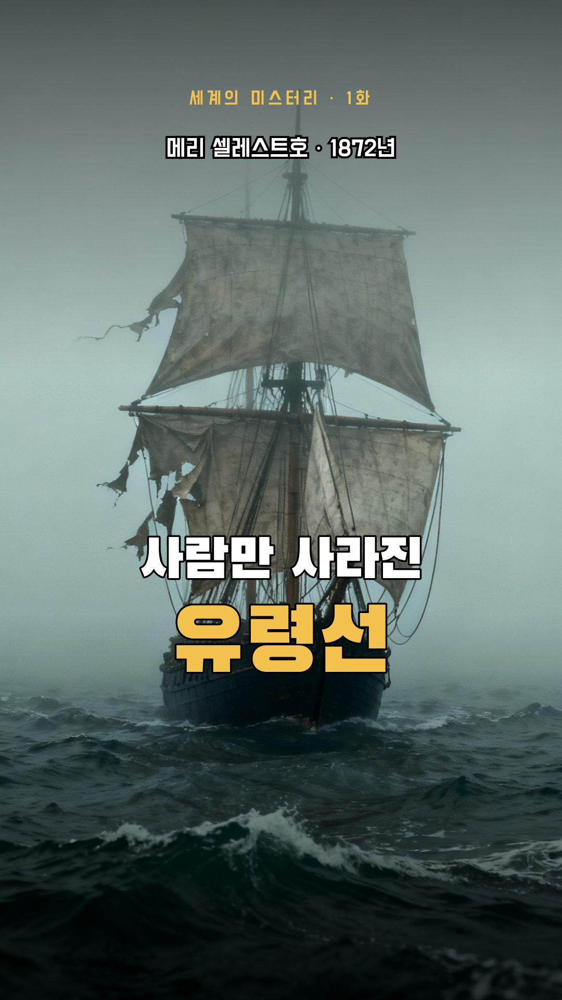
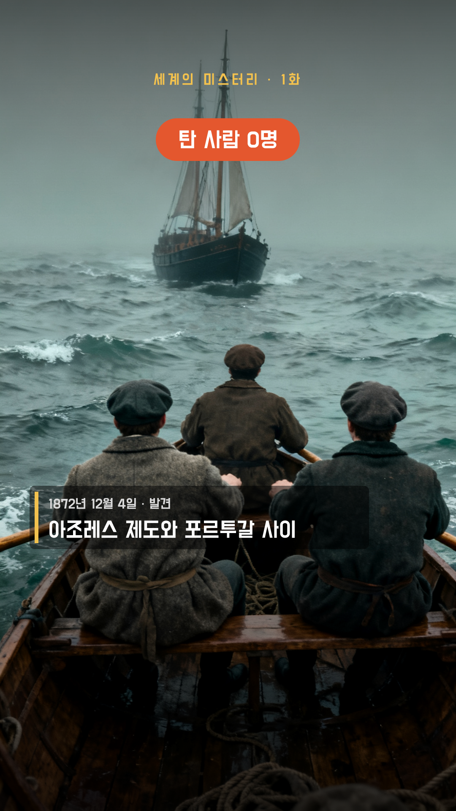
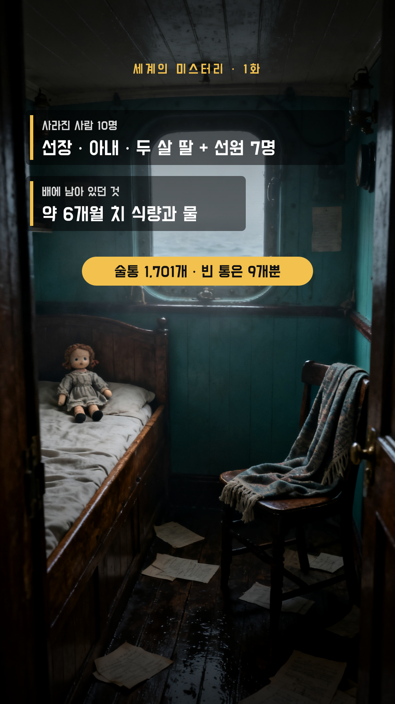
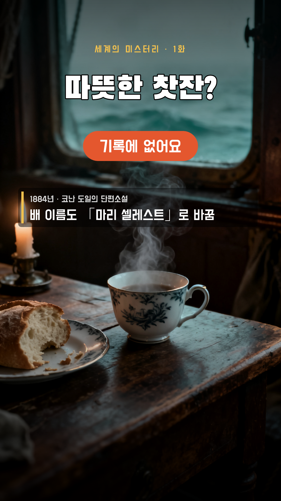
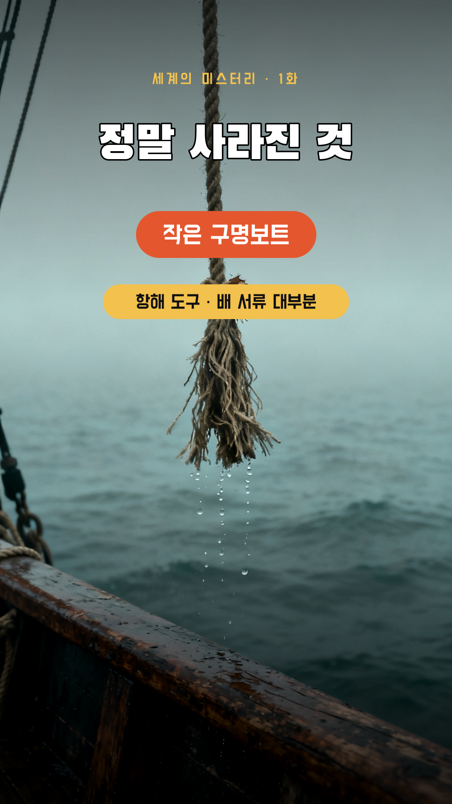
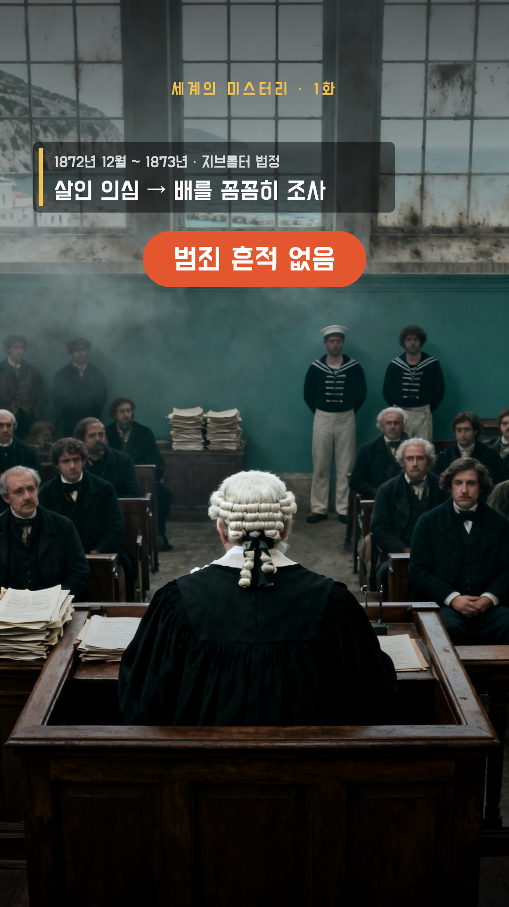
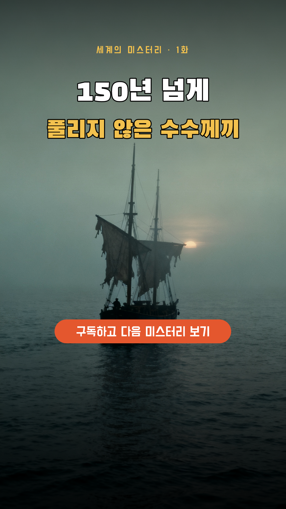

S010:00–0:06 · 6.3초
모션영상 S01, t1 팝 0.1s, t2 도장 0.7s, tag 페이드 1.0s
내레이션1872년 대서양 한가운데, 유령선이 발견됐어요 / 배는 멀쩡한데 사람만 사라졌죠

S020:06–0:11 · 5.3초
모션영상 S02, tag 왼쪽에서 0.3s, none 도장 3.7s
내레이션12월 4일, 지나던 배가 홀로 떠도는 배를 만났어요 / 올라가 보니 아무도 없었어요

S030:11–0:21 · 9.500000000000002초
모션영상 S03+S03b, who 왼쪽에서 0.3s, food 왼쪽에서 3.3s, cargo 팝 6.4s
내레이션선장과 아내, 두 살 딸까지 열 명이 사라졌어요 / 그런데 배에는 여섯 달 치 식량과 물이 그대로 / 짐칸의 술통 1,701개도 거의 그대로였어요

S040:21–0:30 · 9.799999999999997초
모션영상 S04+S04b, t 팝 0.1s, no 도장 3.8s, doyle 왼쪽에서 5.5s
내레이션따뜻한 찻잔이 남아 있었다는 이야기, 들어 보셨나요? / 사실 그런 기록은 없어요 / 셜록 홈스 작가 코난 도일의 1884년 소설과 함께 퍼진 이야기죠

S050:30–0:38 · 7.100000000000001초
모션영상 S05+S05b, t 팝 0.1s, boat 도장 0.6s, rest 팝 2.4s
내레이션정말 없어진 건 작은 구명보트 하나, / 그리고 항해 도구와 배 서류들이었어요 / 스스로 배를 버리고 떠났을 가능성이 크다는 뜻이죠

S060:38–0:44 · 6.899999999999999초
모션영상 S06, court 왼쪽에서 0.3s, none 도장 4.0s
내레이션당시 법정은 살인을 의심하고 배를 꼼꼼히 조사했어요 / 하지만 석 달 넘게 따져 봐도 범죄 흔적은 찾지 못했죠

S070:44–0:52 · 7.800000000000004초
모션영상 S07, t 팝 0.1s, water 왼쪽에서 0.5s, theory 왼쪽에서 2.8s
내레이션짐칸엔 바닷물이 1미터 넘게 차 있었고 / 새어 나온 술 냄새에 폭발을 걱정했다는 추측도 있어요 / 그리고 열 명은 끝내 돌아오지 않았어요

S080:52–1:01 · 8.299999999999997초
모션영상 S08, t1 팝 0.1s, t2 팝 0.7s, sub 팝 3.2s
내레이션150년이 지난 지금도 풀리지 않은 수수께끼예요 / 더 많은 미스터리가 궁금하다면 구독해 주세요